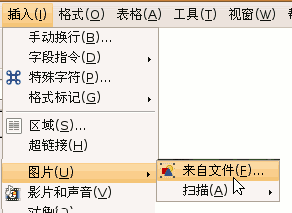
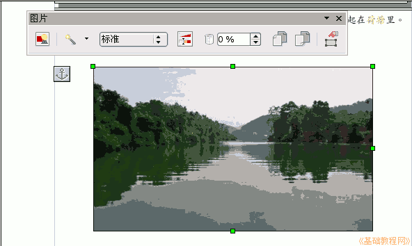
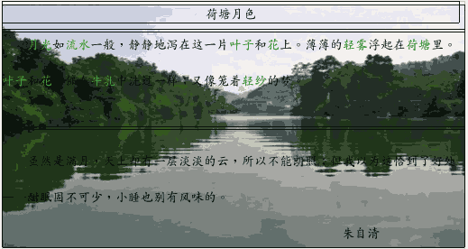
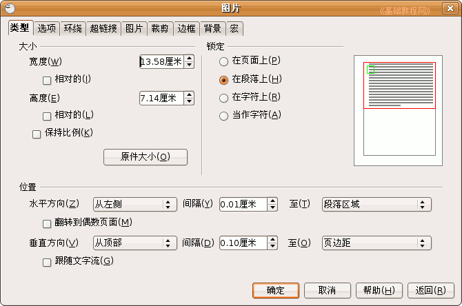
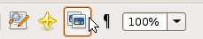
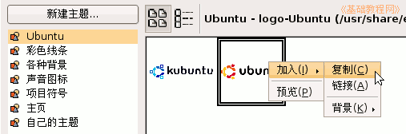

OpenOffice.org 教程之 Writer 文字处理
作者：TeliuTe 来源：基础教程网
六、插入图片播放音乐 返回目录 下一课有时我们会碰到文章中需要插入图片，既美观也增加了文章的内容，下面我们来看一个练习；
1、打开文档
1）启动Writer，自动打开一个空白文档；
2）点菜单“文件－打开”命令，找到自己的文件夹，打开上次保存的“边框和背景”；
3）在正文第一段末尾句号后面，按一下回车键，这样就开始新的一段，接下来插入图片：
2、插入图片文件
1）点菜单“插入－图片－来自文件”，出来一个“插入图片”对话框；

2）在出来的打开对话框里，找到一个图片文件，然后点“打开”按钮；
3）然后图片就插到了当前光标所在的位置，在图片上点击一下，会出来一个图片工具栏；

图片的四周有一些小方框，拖动这些小方框手柄可以改变图片大小；
4）点菜单“格式－环绕－当作背景”，可以发现图片到了文字的下面，用鼠标拖动图片摆好位置；

点菜单“文件－另存为”，以“插入图片”为文件名，保存到自己的文件夹；
5）还可以点菜单“格式－图片”命令，可以进行其他像“环绕”方式等各项设置；

6）点工具栏右边的“画廊”按钮，可以打开一个“图片库”，里面有许多小图片；

7）在图片库左边选一个类别，然后在右边出来的图片上点右键，选“加入－复制”，就可以把图片插入到文档中了；

本节学习了插入图片的基本操作，如果你成功地完成了练习，请继续学习下一课内容；本教程由86团学校TeliuTe制作|著作权所有
基础教程网：http://teliute.org
美丽的校园……
转载和引用本站内容，请保留版权信息和本站链接。